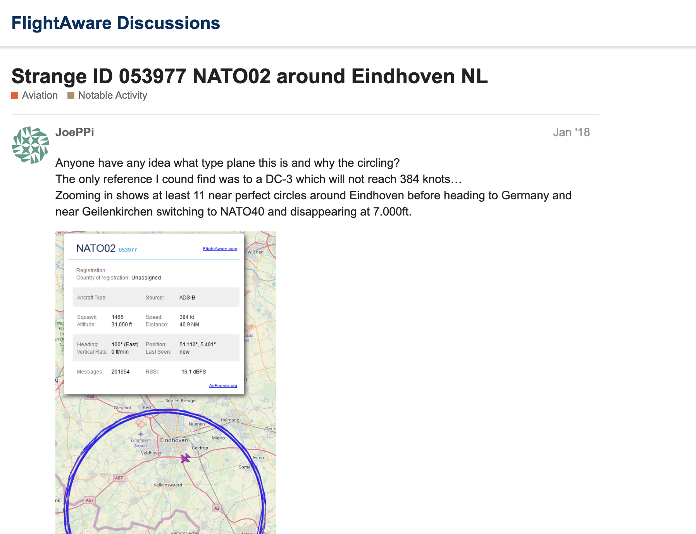

import os
import requests
from bs4 import BeautifulSoup
import pandas as pd
import re
import timeUse tail number to analyze where each plane was registered
df = pd.read_csv("/Users/karinashedrofsky/LEDE_2023/flights-project/csvs/all_plane_info.csv")df.head()| icao | tail | plane | |
|---|---|---|---|
| 0 | 151d9c | RA-73116 | Boeing 737-8LJ |
| 1 | 738057 | 4X-EHI | Boeing 737-958ER |
| 2 | 15206f | RA-73839 | Airbus A321-251NX |
| 3 | 151d77 | RA-73079 | Boeing 767-3Y0ER |
| 4 | 896411 | A6-AOE | Airbus A320-214 |
| ... | ... | ... | ... |
| 1047 | 155c35 | RA-89141 | Sukhoi SuperJet 100-95B |
| 1048 | 152015 | RA-73749 | Airbus A320-214 |
| 1049 | 151ffa | RA-73722 | Airbus A321-211 |
| 1050 | 151ed3 | RA-73427 | Airbus A320-271N |
| 1051 | 4bb855 | TC-NBU | Airbus A320-251N |
1052 rows × 3 columns
Make new column in DataFrame for beginning characters of tail number
Usually the beginning of a tail number indicates the registration country
# Check if the "tail" column contains a hyphen
has_hyphen = df['tail'].str.contains('-', na=False)
# Extract the characters before the hyphen
extracted_tail = df['tail'].str.extract(r'^(.*?)(?:-|$)')
# For rows without hyphen, extract the first two letters that come *before numbers* in the "tail" column
extracted_first_two_letters = df.loc[~has_hyphen, 'tail'].str.extract(r'^([A-Za-z]{2})\d{2}')
# Combine the extracted values and store them in a new "tail_prefix" column
df['tail_prefix'] = extracted_tail.where(has_hyphen, extracted_first_two_letters)
# Set the values in the "tail_prefix" column to empty strings for rows that don't have hyphen or 2 letters followed by numbers
df.loc[~has_hyphen & df['tail_prefix'].isna(), 'tail_prefix'] = ''df| icao | tail | plane | tail_prefix | |
|---|---|---|---|---|
| 0 | 151d9c | RA-73116 | Boeing 737-8LJ | RA |
| 1 | 738057 | 4X-EHI | Boeing 737-958ER | 4X |
| 2 | 15206f | RA-73839 | Airbus A321-251NX | RA |
| 3 | 151d77 | RA-73079 | Boeing 767-3Y0ER | RA |
| 4 | 896411 | A6-AOE | Airbus A320-214 | A6 |
| ... | ... | ... | ... | ... |
| 1047 | 155c35 | RA-89141 | Sukhoi SuperJet 100-95B | RA |
| 1048 | 152015 | RA-73749 | Airbus A320-214 | RA |
| 1049 | 151ffa | RA-73722 | Airbus A321-211 | RA |
| 1050 | 151ed3 | RA-73427 | Airbus A320-271N | RA |
| 1051 | 4bb855 | TC-NBU | Airbus A320-251N | TC |
1052 rows × 4 columns
Print all planes where registration country can’t be determined automatically
These could be interesting, so are worth checking manually
outlier_tails = df[df['tail_prefix'] == '']
outlier_tails| icao | tail | plane | tail_prefix | |
|---|---|---|---|---|
| 86 | 60003c | 701 | Airbus A319-132 | |
| 176 | 155c40 | 89152 | Sukhoi Superjet 100-95B | |
| 304 | 466b38 | NaN | - | |
| 514 | 032091 | NaN | - | |
| 580 | 053977 | VARIOUS | Several Different Aircraft | |
| 682 | 600be9 | NaN | - | |
| 718 | ea000f | NaN | - | |
| 775 | 26002b | NaN | - | |
| 837 | 1f3395 | 78741 | Ilyushin Il-78M-90A |
Quick Google search of 053977 shows it may be a NATO plane

Scrape the Wikipedia page that defines which country each registration prefix belongs to
prefix_html = requests.get("https://en.wikipedia.org/wiki/List_of_aircraft_registration_prefixes").text
prefix_soup = BeautifulSoup(prefix_html)#select the right table on the page
table = prefix_soup.select("table")[1]
table.text[:100]'\n\nCountry or region\n\nRegistration prefix\n\nPresentation and notes\n\n\nAfghanistan\n\nYA[1]\n\nYA-AAA to YA-'#select the first row from the table
header = table.select("tr")[0]
header<tr>
<th scope="col">Country or region
</th>
<th scope="col">Registration prefix
</th>
<th class="unsortable" scope="col">Presentation and notes
</th></tr>#extract the column names from the header
prefix_header = [ head.text.strip() for head in header.select("th") ]
prefix_header['Country or region', 'Registration prefix', 'Presentation and notes']#select all non-header rows from the table
row_els = table.select("tbody tr")[1:] #skip the first row, which is the header
len(row_els)240#extract the text from each row into a python list
prefix_entries = [
[cell.text.strip() for cell in row.select("td")]
for row in row_els
]
prefix_entries[0]['Afghanistan', 'YA[1]', 'YA-AAA to YA-ZZZ.']#turn the extracted data into a dataframe
prefix_df = pd.DataFrame(prefix_entries, columns=prefix_header)
prefix_df.head()| Country or region | Registration prefix | Presentation and notes | |
|---|---|---|---|
| 0 | Afghanistan | YA[1] | YA-AAA to YA-ZZZ. |
| 1 | Albania | ZA[2] | ZA-AAA to ZA-ZZZ. |
| 2 | Algeria | 7T[3] | 7T-VAA to 7T-VZZ Civilian.\n7T-WAA to 7T-WZZ M... |
| 3 | Andorra | C3[2] | C3-AAA to C3-ZZZ |
| 4 | Angola | D2[3] | D2-AAA to D2-ZZZ. Colonial allocation CR-L. |
#drop the brackets and number within each bracket from the 'Registration prefix' column
prefix_df['Registration prefix'] = prefix_df['Registration prefix'].str.replace(r'\s*\[.*?\]$', '', regex=True)prefix_df.head()| Country or region | Registration prefix | Presentation and notes | |
|---|---|---|---|
| 0 | Afghanistan | YA | YA-AAA to YA-ZZZ. |
| 1 | Albania | ZA | ZA-AAA to ZA-ZZZ. |
| 2 | Algeria | 7T | 7T-VAA to 7T-VZZ Civilian.\n7T-WAA to 7T-WZZ M... |
| 3 | Andorra | C3 | C3-AAA to C3-ZZZ |
| 4 | Angola | D2 | D2-AAA to D2-ZZZ. Colonial allocation CR-L. |
Make new DataFrame that specifies where each plane in the data was registered based on the registration prefix
reg_country_df = pd.merge(df, prefix_df, left_on='tail_prefix', right_on='Registration prefix', how='inner')#Drop the extra columns after the merge
reg_country_df = reg_country_df.drop(columns=["Registration prefix", "Presentation and notes"])
#Make sure the country listed for the blank tail_prefix is also blank
reg_country_df.loc[reg_country_df['tail_prefix'] == '', 'Country or region'] = ''
reg_country_df| icao | tail | plane | tail_prefix | Country or region | |
|---|---|---|---|---|---|
| 0 | 151d9c | RA-73116 | Boeing 737-8LJ | RA | Russia |
| 1 | 15206f | RA-73839 | Airbus A321-251NX | RA | Russia |
| 2 | 151d77 | RA-73079 | Boeing 767-3Y0ER | RA | Russia |
| 3 | 14f110 | RA-61712 | Antonov An-148-100EA | RA | Russia |
| 4 | 151e32 | RA-73266 | Boeing 737-83N | RA | Russia |
| ... | ... | ... | ... | ... | ... |
| 1078 | 51408c | 4L-GTI | Boeing 737-7CT | 4L | Georgia |
| 1079 | 09a055 | C5-SUV | Embraer ERJ 135BJ Legacy 650 | C5 | Gambia |
| 1080 | 504e64 | ER-00006 | Airbus A320-232 | ER | Moldova |
| 1081 | 515313 | EY-787 | Boeing 737-8GJ | EY | Tajikistan |
| 1082 | 06a0b3 | A7-BCO | Boeing 787-8 | A7 | Qatar |
1083 rows × 5 columns
I noticed that the new DataFrame has extra rows, and realize the tail prefix ‘B’ is being attributed to both China and Taiwan
reg_country_df[reg_country_df['tail_prefix'] == 'B']| icao | tail | plane | tail_prefix | Country or region | |
|---|---|---|---|---|---|
| 891 | 78122f | B-8862 | Airbus A330-343E | B | China |
| 892 | 78122f | B-8862 | Airbus A330-343E | B | Taiwan |
| 893 | 78076e | B-2088 | Boeing 777-39LER | B | China |
| 894 | 78076e | B-2088 | Boeing 777-39LER | B | Taiwan |
| 895 | 781094 | B-8678 | Airbus A330-343E | B | China |
| ... | ... | ... | ... | ... | ... |
| 966 | 78086c | B-2031 | Boeing 777-39LER | B | Taiwan |
| 967 | 780ef8 | B-8287 | Airbus A330-343E | B | China |
| 968 | 780ef8 | B-8287 | Airbus A330-343E | B | Taiwan |
| 969 | 780c9e | B-2006 | Boeing 777-39LER | B | China |
| 970 | 780c9e | B-2006 | Boeing 777-39LER | B | Taiwan |
80 rows × 5 columns
According to the Wikipedia page, planes registered in China have tail number B- followed by 4 numbers, and planes registered in Taiwan have B- followed by 5 numbers. Let’s fix it…
#Check how many tail numbers in the df that start with 'B-' are followed by 4 characters
count_4_characters = df[df['tail'].str.match(r'^B-\w{4}$', na=False)].shape[0]
count_4_characters40#Check how many tail numbers in the df that start with 'B-' are followed by 5 characters
count_5_characters = df[df['tail'].str.match(r'^B-\w{5}$', na=False)].shape[0]
count_5_characters0Since all are followed by 4 characters, we can conclude they are registered in China, and not Taiwan
#Drop row from reg_country_df where 'Country or region' = Taiwan
reg_country_df = reg_country_df[(reg_country_df['Country or region'] != 'Taiwan')]
reg_country_df.info()<class 'pandas.core.frame.DataFrame'>
Index: 1043 entries, 0 to 1082
Data columns (total 5 columns):
# Column Non-Null Count Dtype
--- ------ -------------- -----
0 icao 1043 non-null object
1 tail 1038 non-null object
2 plane 1043 non-null object
3 tail_prefix 1043 non-null object
4 Country or region 1043 non-null object
dtypes: object(5)
memory usage: 48.9+ KB#Export as csv
reg_country_df.to_csv("/Users/karinashedrofsky/LEDE_2023/flights-project/csvs/reg_country.csv", index = False)Breakdown where the planes were registered
registration_counts = reg_country_df.groupby('Country or region').size().reset_index(name='count').sort_values(by='count', ascending=False)registration_counts| Country or region | count | |
|---|---|---|
| 23 | Russia | 725 |
| 28 | Turkey | 71 |
| 30 | United Arab Emirates | 64 |
| 6 | China | 40 |
| 31 | Uzbekistan | 16 |
| 16 | Kazakhstan | 14 |
| 8 | Egypt | 13 |
| 5 | Belarus | 11 |
| 2 | Armenia | 10 |
| 0 | 9 | |
| 3 | Azerbaijan | 9 |
| 13 | Iran | 8 |
| 24 | Serbia | 7 |
| 18 | Kyrgyzstan | 6 |
| 14 | Iraq | 4 |
| 15 | Israel | 4 |
| 17 | Kuwait | 4 |
| 29 | Turkmenistan | 4 |
| 20 | Morocco | 3 |
| 21 | Oman | 3 |
| 1 | Algeria | 3 |
| 11 | Georgia | 2 |
| 9 | Ethiopia | 2 |
| 25 | Syria | 2 |
| 4 | Bahrain | 1 |
| 27 | Tunisia | 1 |
| 7 | Czech Republic | 1 |
| 10 | Gambia | 1 |
| 26 | Tajikistan | 1 |
| 22 | Qatar | 1 |
| 19 | Moldova | 1 |
| 12 | Germany | 1 |
| 32 | Venezuela | 1 |